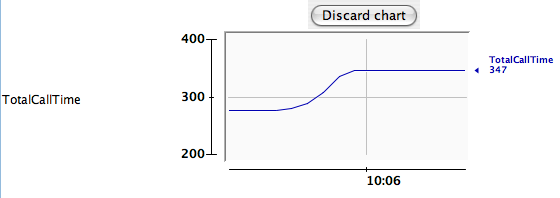

In this lab you will use JMX to monitor a running application
remotely. You will use the
RepositoryPerformanceMonitor to collection
performance metrics and expose them via JMX.
What you will learn:
How to expose a Spring bean as a JMX MBean
How to control the management interface of the exposed JMX MBean
How to export pre-existing MBeans
Specific subjects you will gain experience with:
@ManagedResource, @ManagedAttribute,
@ManagedOperation
@EnableMBeanExport
Estimated time to complete: 30 mins
Quick instructions for this exercise have been embedded within the lab materials
in the form of TODO comments. To display them, open the Tasks view
(Window -> Show view -> Tasks (not Task List)).
Find and open the JamonMonitorFactory
class in the rewards.internal.monitor.jamon
package. Notice that this is an implementation of the
MonitorFactory interface that uses the
JAMon library to accomplish it's performance monitoring.
When you are comfortable with the implementation of this class, move on to the next step where you export an instance of this bean via JMX
(TODO 01) Add Spring's JMX annotations @ManagedResource,
@ManagedAttribute and @ManagedOperation to
the class as well as methods you want to expose via JMX. Use
statistics:name=monitorFactory as name for the bean
exposed.
By placing the data collection and exposure of performance
metrics in the JamonMonitorFactory class, we've
ensured that the RepositoryMonitorFactory is
completely decoupled from any reporting mechanism. The
MonitorFactory interface is very
generic, but allows each implementation strategy to expose any data it
sees fit.
When you have finished exporting the
JamonMonitorFactory class to JMX, move on the
next step
(TODO 2) Find and open the AspectsConfig class
in the config package. In this
file activate annotation driven JMX by adding the appropriate annotation.
In this step, you will deploy the project as a web application
as described Appendix C, Using Web Tools Platform (WTP). However,
before you can do that, you must tell the Java VM to start an
MBeanServer. To do this, open the
Window menu, go to "Preferences...", then select "Java > Installed
JREs" on the left. Select "Edit..." for the JRE that you are using and
add -Dcom.sun.management.jmxremote as a VM
argument. This value instructs the JVM to start the internal
MBeanServer and also allows connections to it via shared memory, so
that when you run jconsole it will see the process
and allow you to directly connect to it, instead of needing to use a
socket connection, with a name/password required.
Now deploy the project as a web application. Once deployed, open http://localhost:8080/jmx in your browser. You should see the welcome page display containing a form that submits to the RewardServlet.
From the command line of your system, or Windows Explorer, run
the $JDK_HOME/bin/jconsole application. When this
application starts up, choose the process that identifies your web
application and open it.
![[Tip]](images/tip.png) | Tip |
|---|---|
If you can not see the process you started, in
-Dcom.sun.management.jmxremote.port=8181 -Dcom.sun.management.jmxremote.authenticate=false -Dcom.sun.management.jmxremote.ssl=false Then restart the process, and connect via
|
Once connected to the application, navigate to the
MBeans tab and find the MBean you exported.
Figure 1: The MonitorFactory MBean
Once you have found the MBean, execute a few rewards operations in the browser and refresh the MBean attributes. You should see something similar to this
Figure 2: The MonitorFactory
attributes
| Tip |
|---|---|
Double clicking on any scalar value will create a graph over time  Figure 3: Scalar value graph |
Explore the attributes and operations of the MBean and when you are finished move to the next section
By using Spring's @EnableMBeanExport element
you not only have triggered annotation based JMX export. The element
will also pick up classes that follow JMX naming conventions (a class
implementing an interface ${className}MBean).
In your JConsole you should now see a
org.hibernate.jmx folder that includes the
StatisticsService. Be sure to activate it by flipping the
StatisticsEnabled flag. Now issue a few queries and
refresh the statistics service. You should see the updates.
Once you have completed this step, you have completed the lab.